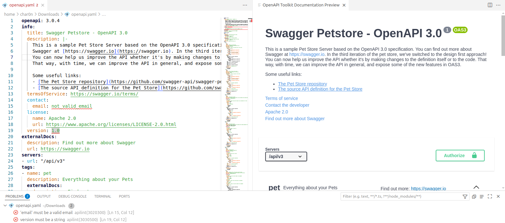

SpecLynx OpenAPI Toolkit
The OpenAPI Powerhouse for VSCode
The OpenAPI Powerhouse for VSCode
SpecLynx OpenAPI Toolkit will be available during early September 2025!
SpecLynx OpenAPI Toolkit is engineered for clarity, control, and confidence, enabling you to focus on designing exceptional APIs.
Get full YAML/JSON autocompletion, inline documentation hints, validation, linting, and live preview as you type — so you catch errors before they cost you time. OpenAPI Toolkit surfaces context-aware suggestions for paths, parameters, responses, components, ...; flags missing or mismatched fields instantly; and renders a side-by-side spec-to-UI preview that updates with every keystroke. Say goodbye to manual spec checks and hello to a fluid authoring experience that keeps your API specs accurate and up-to-date.
All these commands — and more — are just a keystroke away in VS Code, so you can focus on designing great APIs instead of wrestling with tooling.
SpecLynx OpenAPI Toolkit is crafted by industry veterans, Vladimír Gorej and Francesco Tumanischvili, who bring over 15 years of dedicated experience maintaining and evolving Swagger/OpenAPI tools. Their unparalleled expertise ensures you receive a solution with battle-tested reliability and best practices meticulously baked into every feature.